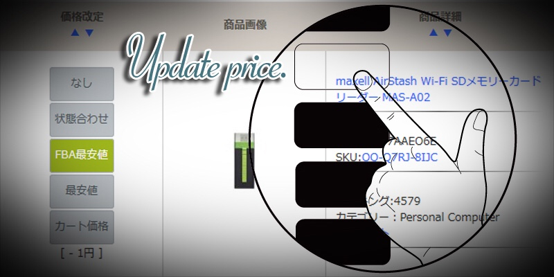

| Amazon販売戦略: 売上・利益・回転率アップの法則 | |
| 大宮 純一 | |
| POW SOURCE INC (2016) | |

目次
はじめに
本書はAmazonの販売においての売上高、利益率、回転率のアップ対策に焦点をあてた内容となっております。
Amazonでの販売を既に行っている方でも、これからの方でも、Amazonのセラーになったら誰しもが「沢山自分の商品を買ってほしい」と考えます。
Amazonに商品を出品すると、その後は何もしなくてもある程度自動的に売れていきます。しかし、あくまでも「ある程度」です。
出品した商品に気をかけて上げて、適正な処理をしていけば売り上げはもとより、利益、回転率は今まで以上にもっとアップします。ただ、安くするだけじゃありません。大事なのは「そのタイミングにあった適正な処理」です。
事項以降で具体的な方法を紹介していきますので、こちらを参考にし、沢山売れるセラーになりましょう。
Amazon販売のメリット・デメリット
既にAmazonで販売を行っている方はおさらいの意味で、これからの方は参考までに、Amazonで販売する事においての「メリット」「デメリット」について触れたいと思います。
Amazonで商品を出品した瞬間に、すぐ売れてしまったという経験をしたことのあるセラーさんがほとんどだと思います。これはAmazonという世界最大規模のショッピングモールの、抜群の集客力にあります。年間7400億円以上、毎日20億円以上の規模がある市場です。それだけの物量を購入するお客様達が24時間、いつでも好きな時に注文出来るのです。プライム会員であれば商品の到着は早いと当日には手元に届きます。購入者にとって、とても便利で生活の一部に溶け込んでいると言っても過言ではありません。
ヤフオク、メルカリ等で個人的に商品を販売している方もいらっしゃると思いますが、Amazonは商品の写真も説明文も考える必要はありません。ヤフオク、メルカリと違い商品の登録から販売開始までをとても少ない作業で完了できます。
ヤフオクでは取引ナビを使って、代金、発送のやり取りをします。この作業は出品者側も購入者側にも負担になります。Amazonでは購入者とのやり取りは一切ありません。注文が入ったら、納品書と送り状を印刷し、梱包した商品に貼り付けて出荷します。後は発送方法と追跡番号を入力すれば完了です。これは、自己発送商品の手順となります。
AmazonにはFBA（フルフィルメント by Amazon）という発送代行システムがあります。こちらを利用することで、商品が売れた際の発送作業を全てAmazonに委託することができます。セラーさんの行う作業は商品を仕入れた後、その商品をAmazonに登録してFBA配送の手続きをしてFBAの納品センターにまとめて送るだけです。商品が売れればFBAのセンターから自動的にお客様の元へ商品が届きます。
代金の受け取りもAmazonが全てやってくれます。受け取った代金は月に数回（セラーさんによって異なります。）Amazonからセラーさんの口座にまとめて振り込まれます。
ヤフオク等に比べてAmazonの手数料は、販売した商品の20％〜30％（FBAを利用しているか、いないか、出品カテゴリー等によって異なります。）ほど取られます。ヤフオクでしたら10％以下の手数料なのでこの差がかなりあります。しかし、メリットの項で触れたAmazonの抜群の集客力、販売リソースの掛からない点を踏まえると許せる範囲内だと思います。セラーさんによって受け取り方が違うと思いますが、普段取引に掛かっていた時間、発送に掛かっていた時間を考慮すると、人を何人か雇っていると思えば納得のいく手数料だと思います。そしてこの手数料はセラーさん同士平等に徴収されます。したがって、手数料込みで粗利の出る商品の仕入れ方、値付けを極めることによってこのデメリットはかなり軽減されます。
Amazonはひとつの商品ページに複数のセラーさんが値付けをした商品が一覧で並びます。お客様も同じ商品ならなるべく安く出品しているセラーさんから購入したいと考えます。なので複数のセラーさん同士の価格競争がどうしても起きてしまい、商品の価格が下がっていく傾向が多く見られます。このデメリットは物の需要と供給を考えれば普通のことなのですが、この「価格競争の起きやすい商品」を知っておけば、その商品の仕入れをしなければ良いだけです。商品によって直ぐに暴落してしまう商品や、何年も売れ行きが良くまったく商品価値の変わらない商品もあります。日々自分の出品している商品の売れ行きや価格に注目し、原因を究明していくと沢山のことが見えてきます。また私自身ここにAmazon販売の醍醐味があると思っております。
どのような商売にもメリット、デメリットは必ず存在します。その中でもAmazon販売はメリットに対してのデメリットがほぼ手数料のみです。作業時間がデメリットとして存在せず、メリットの項目に書けるほどAmazonでの販売は楽にこなすことができます。
お金は平等ではありません。時間は全ての人間に対して平等に作用します。お金はやればやっただけ実数となって自分に返ってきます。時間はどれだけ頑張っても全人類1日24時間きっかりです。
そこでまずは「やれる事を増やすための時間作り」です。やらなければいけない事に割ける時間が他のセラーさんよりも多ければどうなるか想像してください。他のセラーさんが商品登録をしている中、その作業が終わっていれば仕入れに時間が回せます。他のセラーさんよりも速く仕入れて速く売り切ってしまう。これを繰り返すと資金効率もよくなりさらに仕入れ金を増やす事ができます。資金に余裕ができると、無理な販売をしなくて済むようになります。もっと資金に余裕ができると人を雇えます。すると1日24時間という限られた時間をせどり以外にも使う事ができるようになります。これの繰り返しによってお金はやれば手に入る実感を少しづつ掴んでみてください。そうすると、心にも頭にも余裕ができ他の事にも集中して取り組めるようになります。時間を確保する感覚を身につけるとAmazon販売のデメリットがどんどん小さくなります。時間を確保できるメリットがどれだけ重要かが良くわかります。
お金の出入りを気にするなということではありません。まずはお金の出入りに細心の注意を払いつつ、何が重要で、何が無駄かを見極めることができるように時間を確保する努力をするということです。
マカド！Amazon総合管理ツールについて
マカド！は誰でも使えるAmazonセラー向けの販売を有利にする総合管理ツールです。
弊社もAmazonのせどりを実践し、沢山のノウハウを習得し、月商1800万円、年商2億円を超えることができました。
弊社も初めのうちは他社様のツールを使わせていただき、売上を上げることができました。しかし、自分たちの本当にやりたい処理には未対応であったり、PCインストール型のツールだったため、常にPCをつけていなければ処理がされない状況等から、「自分たちで作ってしまえばもっと良いものがつくれる」と確信しました。
そこから、すぐに設計図の製作、サーバーの調達、プログラミングを開始し度重なるテストを繰り返し、マカド！は完成しました。まずは自分たちだけで使用してみて基本的な機能に問題がない事を確認し、2016年2月にリリースさせて頂きました。
マカド！には、Amazonでの売上、利益、回転率を高める素晴らしい機能がふんだんに詰まっております。
次の項では実際の機能面について触れてまいります。
マカド！の機能
マカド！には大きく分けて3つの機能が搭載されています。
上記3つの処理を使いやすさ、見やすさを考慮して丹精こめてつくりました。
Amazonでの販売を開始するとわかると思いますが、Amazonでは商品の価格が秒単位で常に変動し続けます。これは一つの商品に対して、複数のセラーさんが相乗りで販売しているためです。
最安値を取りたいセラーさん同士での価格の下落、最安値で出品していたセラーさんの商品の売り切れによる価格の上昇、Amazon小売部門の参入による価格の大幅下落等、不特定多数の要因により常に価格は変動します。
この価格の変動を察知し、速やかに自分の商品の価格を最適化することにより、販売機会の損失の減少、利益の確保等ができます。
マカド！は10分間に最大で3万件程度の商品の価格改定を24時間自動で行います。日本で公開されている価格改定ツールの中では最速の改定速度となります。
改定時間が遅いと、その分機会損失が生まれる可能性があるため、可能な限り高速に改定ができるようにしました。
※セラー様によっては10分に1回の価格改定は速すぎるとのお声があり、現在は10分間隔以上であれば自由に改定間隔を設定することができます。

自動価格改定の際に、該当商品のどのコンディションでどの配送ルートかを考慮して価格改定ターゲットを1クリックで商品毎に、もしくは出品時の自動モード設定にて一括で自動設定することができます。
価格改定ターゲットとは、該当の商品が、「FBAの中古のほぼ新品の最安値」「自己発送の新品の最安値」「カート価格」等、どの商品の最安値を参考に価格改定を行っていくかの指標となります。
上限価格は「これ以上の値段には自動価格改定しない」価格
下限価格は「これ以下の価格には自動価格改定しない」価格
を入力することにより、最低限の利益・回転率の確保をすることができます。
マカド！の自動価格改定は基本の設定、商品毎の設定、どちらでも対応が可能です。
・価格改定ターゲットから-1円引きにしたい
・価格改定ターゲットの最安値と同額を保持したい
・価格改定ターゲットより1％高い値段を保持したい
等、ご自分の考える販売戦略にのっとりご自由に設定して頂くことが可能です。
AmazonではAmazon自体の小売部門がその他セラー様と同じ土俵に立ち販売を行うことがあります。Amazon小売部門の異様な安い値付けをご覧になっている方も多いと思います。マカド！ではAmazonの小売部門が出品している場合、Amazon小売部門の価格を無視して自動価格改定を行うことができます。また、こちらの機能はランキングによる自動設定にも対応しております。
例えば、ランクが10000位以上の商品はAmazonを無視（すぐに売り切れる可能性があるので安すぎる価格は無視する）する、ランクが300000位より低い場合はAmazonを含めた最安値で自動価格改定を行う（売れ行きの悪い商品なので不良在庫になってしまう前に売り切ってしまいたい）など、ランキングの変動によって自動で切り替えることができます。
Amazon販売において、ランキングとカテゴリーは商品の売れ行きの指標となります。
マカド！では売れ行きの悪い不良在庫予備軍の商品に対し、Amazonランキング・カテゴリーを考慮した値引きが可能です。
常に変動しているAmazonランキングを見張り、例えば、
・100000位〜200000位の商品は基本の価格改定の値引き設定に加えて-5円値引き。
・1位〜5000位までの商品はAmazon小売部門の無視
・本のカテゴリーの500000位以上を1％値引き
等、自由に自分だけのポートフォリオを組んで価格改定の設定ができます。
マカド！は1商品の登録に掛かる時間はわずか数秒。商品登録の煩わしさから解放されます。コンディション説明の自動保存や、複数人での同時登録作業等、ありとあらゆる方面から、商品登録に掛かっていた時間を削減する工夫が盛り込まれております。
Amazonのセラーセントラルでの商品登録作業に手こずっていた方も、既に慣れてしまっている方でも1度ご利用いただくと、作業に必須なツールとなります。
FBA納品の際、Amazonのセラーセントラル上で商品ラベルを印刷すると、順番がバラバラになってしまい、ラベルと商品の照らし合わせの時間が必要となってしまいます。
マカド！で商品登録をすると、登録した順にラベルが印刷されます。つまり、商品登録の終わった商品から順に並べていくだけで、ラベルをどの商品に貼り付ければいいのかがすぐに察知できるようになります。万が一ラベルを貼り間違えても問題ありません。商品ひとつひとつ、ラベルを印刷し直せるので、ラベルの無駄もありません。
FBA納品を行う際、商品のサイズやカテゴリーによって異なった納品先のセンターが指定される場合があります。
納品用のダンボール箱に空きがある場合は一旦FBAへの納品をお待ちください。新たに仕入れた商品を同じように商品登録をすると再度自動的に納品センターの振り分けが行われます。違う納品プランが作成されますが、心配ありません。既存のFBAへの納品を待っていた方の納品プランに商品画像をドラッグ＆ドロップするだけで、納品プラン間を商品が移動し、納品プランがひとつにまとまります。
商品をまとめて、ダンボール箱が一杯になったらFBAのセンターへ発送しましょう。ダンボール箱も必要経費です。なるべく削減することが大事です。
Amazon販売では日々の売上の管理も重要となります。
マカド！はわざわざ、セラーセントラルにて毎日の売上、販売数、売れた商品のリストをダウンロードする必要はありません。全ての情報は全自動且つリアルタイムで更新されます。
売上、注文数、販売数、はもちろん。商品毎に仕入れ価格を設定しておくことによって、仕入れ価格の集計、粗利も自動的に計算します。もちろんAmazonで掛かる手数料を加味した粗利も自動計算します。これらの自動集計は月別・日別で閲覧が可能です。
実際に売れた商品もほぼリアルタイムでマカド！が自動で取り込みます。売値がいくらで手数料がいくら、入金額まで算出します。
たくさんの商品を出品しているとどうしても赤字の商品がでてきてしまうかと思います。
売れた商品の一覧から赤字商品のみ、黒字商品のみを選択して表示することも可能です。実際の粗利、利益率まで計算済みのデータです。
赤字・黒字を見極めることのできるこの機能は、今後の仕入れにも大変有用な機能となります。
これらの機能以外にも多種多様なセラー様にとって大変有用な機能がマカド！には搭載されております。また、日々追加機能の更新も行っておりますのでこれ以外の機能についてはマカド！のサポートブログをご覧ください。
機能が追加されるとこちらのブログに随時アップされていきます。
さらなる売り上げを追求するには

本書ではあえて仕入れの部分には触れません。これは人それぞれのスタイルがあるのと、仕入れの方法は既に沢山世に公開されているからです。
Amazonへのセラーアカウントの登録方法、アカウントの健全性、お客様へのサポート。この辺りも当たり前のように既に公開されている情報ですので本書では触れません。
AmazonのセラーとしていかにAmazonでうまく立ち回るか、いかに作業リソースを減らし、仕入れや他の事に時間を確保することができるかがAmazon販売での最重要項目だと思います。
私共が売り上げを上げる秘訣だと実感できたのは、アカウントの健全性を保つことでもなく、カートのアルゴリズムを解析することでもなく、もっと単純な所にありました。
「ただ真面目に商品を良く見て、何が売れるのか、何を仕入れてはダメなのか」という
「いくら使って、いくら入金があったのか」という
「1商品の登録時間、商品にラベルを貼る速度、箱詰め作業等の効率化」に伴う
上記3点のみを突き詰めることで年商は2億円を突破しました。
私共には必殺技的な
「誰でも儲かる！」
「簡単に月商1000万円！」
「1日たった15分作業するだけで毎日10万円の収入！」
の様なノウハウは持っていません。そして、この様な美味しい話はこの世に存在しません。
要点をまとめると
だけで、月商1000万円を超えることは可能です。ただし、あえて言いますが、全ての方にこれが可能かというと答えはノーです。
初めは意気込んで「やるぞ！」という気持ちが強くても、実際に行動に移さない方が80％。
実際に行動を起こしたものの「自分には無理」と言い訳をしてまた美味しい話を探し始める方が15％
沢山頑張っていて物事を理解していると思い込み、根本的なことを正確に理解していなく売り上げの上がらない方が4％
99％の方は年商1000万円には到底到達できない心構えの方です。
残りの1％だけが、きちんと結果を出し、どんどんステップアップしていく人間となります。
真面目に、地道にコツコツと、諦めずに、度々間違いを犯してもなるべく最適なアクションさえ起こしていれば意外と簡単に売り上げはあがります。
情報に左右されることが仕事になっていて1日の時間を情報収集にあててしまっている方も少なくないと思います。情報だけをやみくもにひたすら集めて頭でっかちになっても、そこから生まれるものは何もありません。たとえば、どんな情報でも一度アクションを起こしてみる。起こしてみた結果から目を背けないで失敗してもそれを糧にする。同じ失敗をしないよう気をつけて次に進む。こういったアクションを起こし続ければ、情報収集もとても有意義な時間となります。
本書の趣旨はAmazon販売とマカド！の紹介ですのでかなり外れた内容かと思いますが、Amazonの販売であれ、他のビジネスモデルであれ、一貫して言えるのがとにかく「やってみる」ということです。
「やってみる」が億劫な方はマカド！を使っても絶対に売上が上がることはありません。なぜなら、マカド！は自分のリソースを減らし、空き時間を作るだけの道具だからです。自分の中でAmazonで売上を上げる、明確に月商1000万円が目標。ではそれを達成するにはどうすれば良いか。その中の一つの選択肢としてマカド！は存在しているだけです。夢のような超儲かるツールではありません。
もしAmazonの販売で売上を上げたい。もっと収入を増やしたいとい方が本書を手に取った時、マカド！はそのお手伝いをさせて頂きます。
弊社としても、今はマカド！を育て上げたいので、惜しみなくせどり自体のノウハウの提供もさせて頂きます。
とても本書の趣旨から外れたあとがきとなってしまいましたが、
是非ともAmazon総合管理ツール「マカド！」をよろしくお願い申しあげます。
Amazon総合管理ツール マカド！
マカドインフォメーションセンター